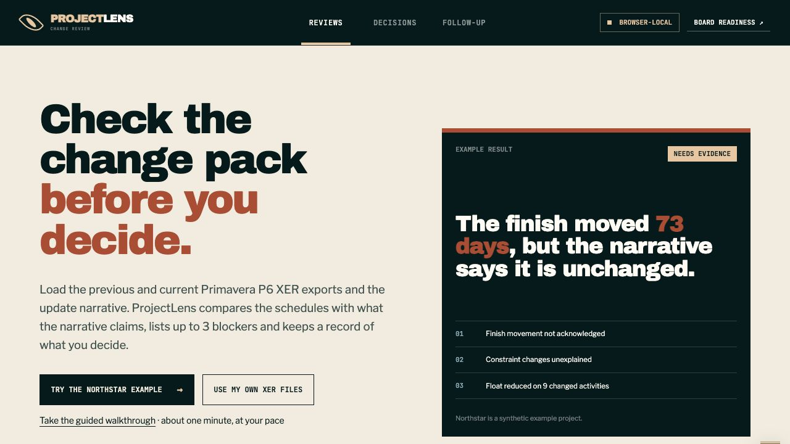
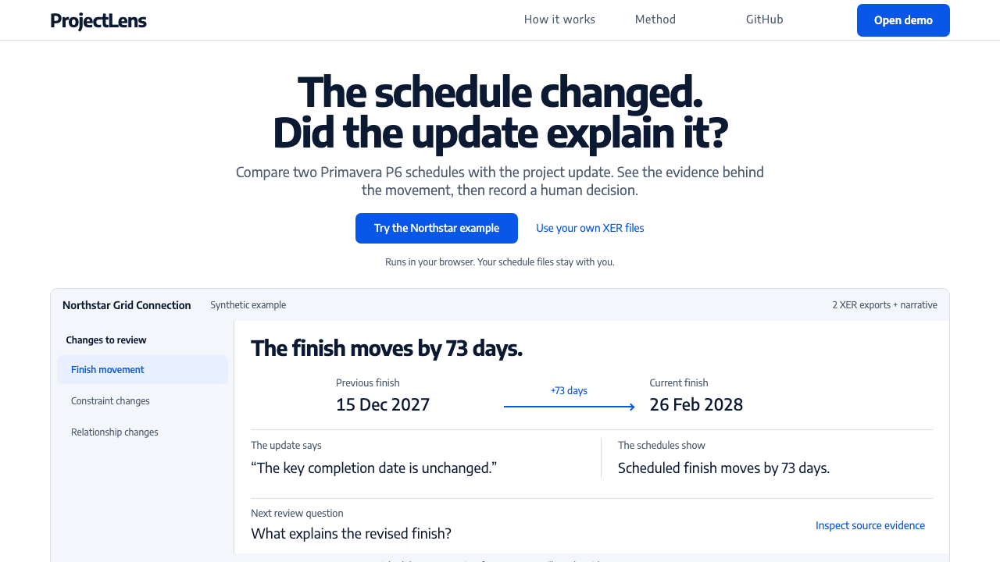

ProjectLens: check the story against the schedule
A project update says the finish date has not changed. The schedule files show it has moved 73 days. ProjectLens puts that conflict next to the schedule entries behind it, so a reviewer can ask for an explanation and record a decision.

The problem
On large projects, the team sends a written update with each new version of the schedule, often exported from planning software called Primavera P6. Reviewers have to check the two agree. A confident written update can hide dates that moved, fixed dates that changed, or tasks that now depend on different work.
The decision it supports
Should the update be accepted? ProjectLens lists what changed, puts the three most important findings first and keeps all five from the example available. The reviewer can ask for evidence, record who decided and why, and track any conditions. The tool finds the mismatch; the person decides what it means.
Limits
ProjectLens reads single-project Primavera P6 exports (XER files) and looks for key phrases in the written update. It shows what changed, not why, and it does not decide who is responsible or approve anything. Decision records stay on your device and are not signed. If you choose to save a draft, it includes the schedule files. Planners have not yet tried it on real project files.
This is a personal project with a made-up example project. It has not been used by a client, and I have not measured time saved.
Try it step by step
- Open the Northstar example, or choose two schedule exports of your own and paste the written update. Files are read in your browser and never uploaded.
- Select a finding to see the dates and schedule entries behind it. You can edit the update and run the checks again; the original wording stays in the record.
- Record a decision with who made it and why. If you approve with conditions, add the condition, its owner and a due date.
- Download the record. Close each condition when the follow-up is done, or save a draft on this device to finish later.
Before and after
The first screen, before and after, using the same example. Select either image to see it full size.




Why the design changed
Visitors had to click past an introduction before they saw anything work. Now the first screen shows the real date comparison and the question a reviewer should ask next. In the full review, the date changes stay visible even after someone edits the written update, and the original and edited wording are kept side by side.
Technical evidence
For engineers. The Northstar finish moves from 15 Dec 2027 to 26 Feb 2028, 73 days. Three findings are put first and all five stay in the record. Optional public-record context never has to be dismissed before saving a decision. Seven browser test suites cover source integrity, edits to the update, decisions, exports, drafts, storage failures and follow-up.
Take the interactive walkthrough. It uses the same file reader, checks and decision forms as the full tool. Walkthrough records are kept apart from saved work and disappear when you reload. It pauses for your decision, and if you prefer reduced motion you can step through with Next.
Design history and earlier captures
Earlier workflow captures remain available: original workflow and first evidence-desk iteration.


First-screen captures: before the wording pass, after the wording pass and phone view.